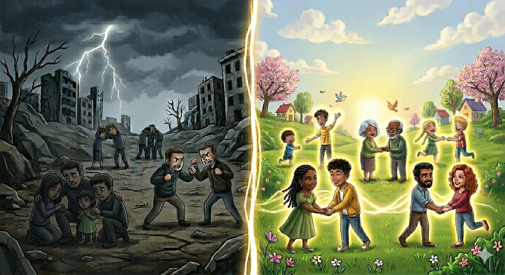
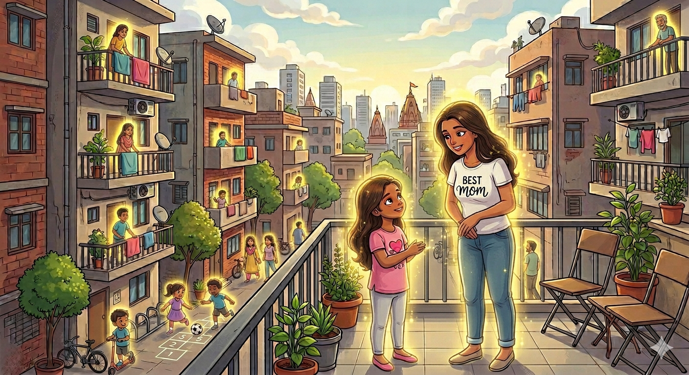
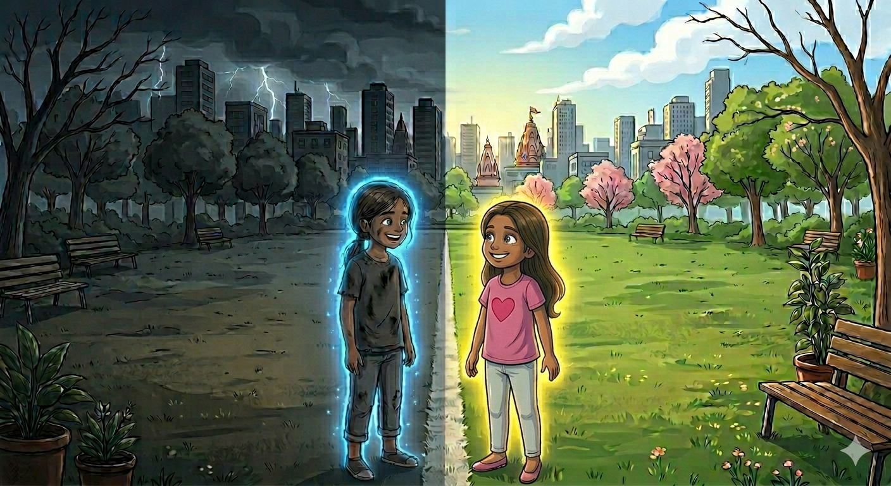
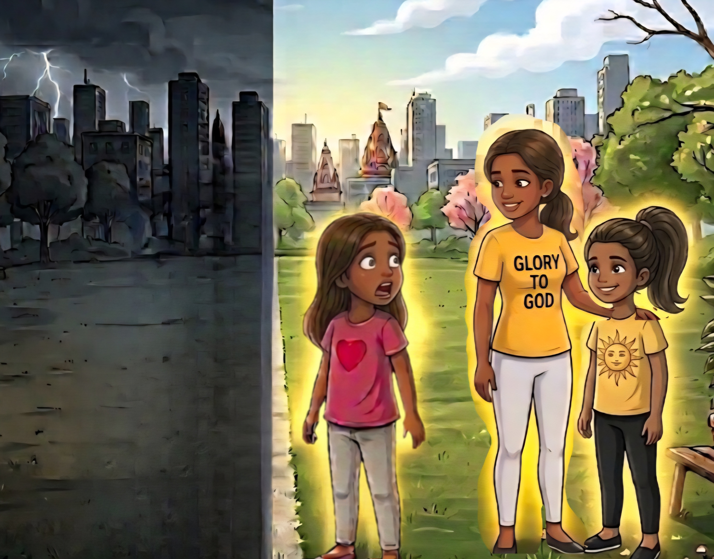

J.J Stories
J.J Stories
Author of story:JaiannahJones
Illustrated By: NicelinJones
These are moral stories from J.J stories.

In a faraway place there was a land which was seperated into two lands, In the right side there was light, People were joyful and happy. Everyone had a bright glow while on the left side it was dark and you can always hear crying and whining and people were always fighting. There was no peace in the dark side of the land and there was a white border between the light land and the dark land but the dark land people was not allowed in the light land because the light land people believed that if they communicate or join with the dark land people the light land people will also become like the dark land people but the light land people were allowed in the dark land but not even once a light land person was able to come back to the light land because they also started behaving like the dark land people

In the same light land there was a eight year old young girl whose name was Glorie, Because of the problem with the dark land people, Glorie's mother always told her," Glorie remember to never go near the dark land border because you might become like them and the athorities will ban you from ever returning to the light land, Do you understand?". Then Glorie replied ," Yes mom, I understand Don't worry I won't go to the dark land". But Glorie was a very curious little girl and she always had question like why was the dark land existing in the first place and why people who go there become like them, These were the main questions that Glorie had.

One day Glorie decided to find the mistery of the dark land so she decided to go after her school was finished she said to her self," Every day after school I usually go to the Library to read books for a few hours so instead of going to the library today, I will go to the dark land hehe, Mom will never find out". So she went to school, After a few hours later Glorie went to the border of the dark land and when she finally reached the border she hesitated," Should I go in or not? what if something happens just like mom said? No No I have to do this or No one would find the answers for the mistery questions". So she went in the dark land and was exploring the land when she heard a crying noise So Glorie went in that direction when she saw a girl who is the same age as her so Glorie went and asked," Hey why are you crying?, Is everything alright?". Then the girl looked up and wiped her tears and said ," Wait aren't you from the light land, Hi My name is Camine but I have a question why did you come to the dark land Haven't you heard about the rumours". Then Glorie replied," Oh I just came to solve the misteries about this land but why were you crying"."I was crying because there isn't a so called peace in the dark land I am actually surprized that you don't have these problems in the light land". Then Glorie answered,"well, Why do you think we don't have those problems, Its not like we don't have them but we just don't look at those problems if we have any we would just tell that to God and prettymuch forget about it as the Lord will take care of those for us". Then Camine said," You know what i will check it out because i just want these problems gone". And soon everyday Glorie would come and talk to Camine from the border and soon Camine started getting a blue glow but She didn't really care about it.

One day Glorie went to the border when suddenly someone touched her shoulder and she got scared and looked behind when she saw Camine and her mother!," OMG! Camine is that really you? You look so bright and happy and so does your mother".Then Camine replied," Yes Glorie I got this glow right after i talked to you yesterday and when i told my mom, My mom believed me and got the glow as well but my Dad liked being in the dark land so he refused to come". Then Glorie, Camine and her mother decided to tell this news to everyone in the dark land and some believed and got the glow but some didn't and stayed in the dark land and the light land athourities decided that they would let in the people who got the light.
God gave you light so spread it. Tell the people who don't know the truth because the small things you say can change a whole persons life and remember your tongue has the power.